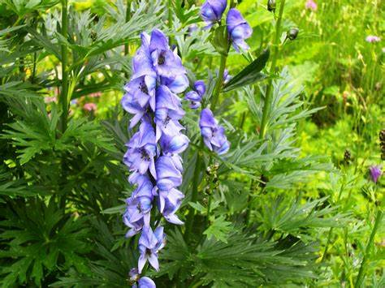

Basonym of Drug
Vatsanabha
Main Synonym
- Amrutam
- Ugravisha
- Garala
- Nabhi
- Pranaharam
- Nahoushadha
- Visham
- Maranam
- Sthavardyam
- Vatsanagam
Regional Name
- Gujarati: Vachnaga
- Hindi: Bachanag
- Malayalam: Kajjila
- Tamil: Vasanasi
- Telugu: Nabhi
- English: Monk's Hood
Botanical Name
Aconitum ferox Wall. Ex Seringe
Family
Ranunculaceae
Classification (Gana)
- Bhavprakash Nighantu: Dhatvadi Varga
- Kaiyadeva Nighantu: Visha Varga
- Raja Nighantu: Mishraka Varga
External Morphology
Perennial herb
Useful Parts
Important Phytoconstituent
- Alkaloids
- Psudoaconitine
- Chasmaconitine
- Inadaconitine
- Bhikhaconitine
- Falconericine
- Crassicauline
Rasa Panchak
- Rasa: Madhura
- Guna: Laghu, Ruksha, Tikshna, Vyavayi, Vikasi
- Virya: Ushna
- Vipaka: Katu
Action
Kaphavatahara
Therapeutic Indication
- Kandughna (Treat pruritus)
- Kusthaghna (Useful in skin disorders)
- Deepen (Appetizer)
- Jwarahara (Anti-pyretic)
- Jangamavishahara (Treat insect or animal poison)
Therapeutic Uses
- Shirahshoola - Yastimadhu and Vatsanabha powder is used as nasya in headache.
- Sotha - Paste of Danshanga lepa and Vatsanabha root with Dhatura leaf juice is applied to the inflammation.
- Visha - Root paste is applied at the site of scorpion bite.
Dose
Powder: 60-125 mg
Formulations
- Jwaramurari Rasa
- Jaya Vati
- Kaphaketu Rasa
- Saubhagya Vatika
- Tribhuvan Kirti Rasa
- Mrityunjaya Rasa
- Ramabana Rasa
- Visha Taila
- Visha Rasayana
- Amruta Rasayana
Adverse Effect
Burning sensations, tingling, numbness, nausea, vomiting, diarrhea, inability to walk, weakness of limbs, cramps, convulsions, breathlessness, hallucination, and death. Contraindicated in cloudy and rainy seasons, also in body conditions like hungry, thirsty, giddiness, strokes, pregnancy, in children, and old age.
Remedial Measure
Gastric lavage, Atropine 0.5-1 mg, Strychnine, symptomatic treatment
Purification
Cut pieces of aconite root tied into cloth, and soak into cow urine for 3 days. Then shade dry the root and apply mustard oil on the pieces.